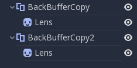
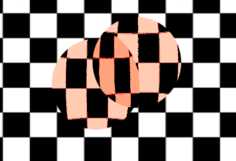

Shader đọc màn hình
Giới thiệu
Người ta thường muốn tạo một shader đọc từ chính màn hình mà nó đang ghi vào. Các API 3D như OpenGL hay DirectX khiến việc này rất khó do những hạn chế phần cứng bên trong. GPU có tính song song cực cao, nên việc vừa đọc vừa ghi gây ra đủ loại vấn đề về cache và tính nhất quán. Do đó, ngay cả phần cứng hiện đại nhất cũng không hỗ trợ đúng cách việc này.
Cách khắc phục là tạo một bản sao của màn hình, hoặc một phần màn hình, vào back-buffer rồi đọc từ đó khi vẽ. Godot cung cấp một vài công cụ giúp quá trình này trở nên dễ dàng.
Screen texture
Ngôn ngữ shader của Godot có một texture đặc biệt để truy cập nội dung màn hình đã được render. Nó được dùng bằng cách chỉ định một hint khi khai báo uniform sampler2D: hint_screen_texture. Một varying built-in đặc biệt là SCREEN_UV có thể được dùng để lấy UV tương đối so với màn hình cho fragment hiện tại. Do đó, fragment shader canvas_item này tạo ra một đối tượng vô hình, vì nó chỉ hiển thị những gì nằm phía sau:
shader_type canvas_item;
uniform sampler2D screen_texture : hint_screen_texture, repeat_disable, filter_nearest;
void fragment() {
COLOR = textureLod(screen_texture, SCREEN_UV, 0.0);
}
Ở đây dùng textureLod vì chúng ta chỉ muốn đọc từ mipmap dưới cùng. Nếu muốn đọc từ phiên bản bị làm mờ của texture, bạn có thể tăng đối số thứ ba của textureLod và đổi hint filter_nearest thành filter_nearest_mipmap (hoặc bất kỳ filter nào khác có bật mipmap). Nếu dùng filter có mipmap, Godot sẽ tự động tính texture bị làm mờ cho bạn.
Cảnh báo
Nếu filter mode không được đổi sang một filter mode có chứa mipmap trong tên, textureLod với tham số LOD lớn hơn 0.0 sẽ cho hình ảnh giống như với tham số LOD 0.0.
Ví dụ về screen texture
Screen texture có thể được dùng cho nhiều việc. Có một demo đặc biệt cho Screen Space Shaders mà bạn có thể tải về để xem và học hỏi. Một ví dụ là shader đơn giản để điều chỉnh độ sáng, độ tương phản và độ bão hòa:
shader_type canvas_item;
uniform sampler2D screen_texture : hint_screen_texture, repeat_disable, filter_nearest;
uniform float brightness = 1.0;
uniform float contrast = 1.0;
uniform float saturation = 1.0;
void fragment() {
vec3 c = textureLod(screen_texture, SCREEN_UV, 0.0).rgb;
c.rgb = mix(vec3(0.0), c.rgb, brightness);
c.rgb = mix(vec3(0.5), c.rgb, contrast);
c.rgb = mix(vec3(dot(vec3(1.0), c.rgb) * 0.33333), c.rgb, saturation);
COLOR.rgb = c;
}
Đằng sau hậu trường
Dù trông có vẻ như phép màu, nhưng không phải vậy. Trong 2D, khi hint_screen_texture lần đầu được tìm thấy trong một node sắp được vẽ, Godot thực hiện sao chép toàn màn hình vào back-buffer. Các node tiếp theo dùng nó trong shader sẽ không được sao chép màn hình lại, vì làm vậy sẽ kém hiệu quả. Trong 3D, màn hình được sao chép sau lượt vẽ hình học đục nhưng trước lượt vẽ hình học trong suốt, nên các đối tượng trong suốt sẽ không được ghi lại trong screen texture.
Do đó, trong 2D, nếu các shader dùng hint_screen_texture chồng lên nhau, shader thứ hai sẽ không dùng kết quả của shader thứ nhất, dẫn đến hình ảnh không như mong đợi:

Trong hình trên, quả cầu thứ hai (trên cùng bên phải) dùng cùng một nguồn screen texture với quả cầu thứ nhất bên dưới, nên quả cầu thứ nhất "biến mất", tức là không nhìn thấy được.
Trong 2D, bạn có thể khắc phục điều này bằng node BackBufferCopy, có thể được tạo instance giữa hai quả cầu. BackBufferCopy có thể hoạt động bằng cách chỉ định một vùng màn hình hoặc toàn bộ màn hình:

Khi sao chép back-buffer đúng cách, hai quả cầu hòa trộn chính xác:

Cảnh báo
Trong 3D, các material dùng hint_screen_texture bản thân chúng được coi là trong suốt và sẽ không xuất hiện trong screen texture kết quả của các material khác. Nếu bạn định tạo instance một scene dùng material có hint_screen_texture, bạn sẽ cần dùng một node BackBufferCopy.
Trong 3D, việc giải quyết vấn đề này kém linh hoạt hơn vì screen texture chỉ được chụp một lần. Hãy cẩn thận khi dùng screen texture trong 3D vì nó sẽ không chụp các đối tượng trong suốt và có thể chụp một số đối tượng đục nằm phía trước đối tượng đang dùng screen texture.
Bạn có thể tái tạo logic back-buffer trong 3D bằng cách tạo một Viewport với một camera ở cùng vị trí với đối tượng của bạn, rồi dùng texture của Viewport thay cho screen texture.
Logic back-buffer
Để rõ ràng hơn, đây là cách logic sao chép backbuffer hoạt động trong 2D ở Godot:
Nếu một node dùng
hint_screen_texture, toàn bộ màn hình sẽ được sao chép vào back buffer trước khi vẽ node đó. Điều này chỉ xảy ra lần đầu tiên; các node tiếp theo không kích hoạt việc này.Nếu một node BackBufferCopy đã được xử lý trước tình huống ở mục trên (kể cả khi
hint_screen_texturekhông được dùng), hành vi mô tả ở mục trên sẽ không xảy ra. Nói cách khác, việc tự động sao chép toàn bộ màn hình chỉ xảy ra nếuhint_screen_textuređược dùng trong một node lần đầu tiên và không tìm thấy node BackBufferCopy nào (không bị tắt) trước đó theo thứ tự cây.BackBufferCopy có thể sao chép toàn bộ màn hình hoặc một vùng. Nếu chỉ đặt cho một vùng (không phải toàn màn hình) và shader của bạn dùng các pixel không nằm trong vùng được sao chép, kết quả của lần đọc đó là không xác định (rất có thể là dữ liệu rác từ các frame trước). Nói cách khác, bạn có thể dùng BackBufferCopy để sao chép lại một vùng của màn hình rồi đọc screen texture từ một vùng khác. Hãy tránh hành vi này!
Texture độ sâu (depth texture)
Với shader 3D, bạn cũng có thể truy cập depth buffer của màn hình. Để làm vậy, hãy dùng hint hint_depth_texture. Texture này không tuyến tính; nó phải được chuyển đổi bằng ma trận chiếu nghịch đảo.
Đoạn code sau lấy vị trí 3D bên dưới pixel đang được vẽ:
uniform sampler2D depth_texture : hint_depth_texture, repeat_disable, filter_nearest;
void fragment() {
float depth = textureLod(depth_texture, SCREEN_UV, 0.0).r;
vec4 upos = INV_PROJECTION_MATRIX * vec4(SCREEN_UV * 2.0 - 1.0, depth, 1.0);
vec3 pixel_position = upos.xyz / upos.w;
}
Texture normal-roughness
Ghi chú
Texture normal-roughness chỉ được hỗ trợ trong phương thức kết xuất Forward+, không có trong Mobile hay Compatibility.
Tương tự, texture normal-roughness có thể được dùng để đọc normal và độ nhám (roughness) của các đối tượng được kết xuất trong depth prepass. Normal được lưu trong các kênh .xyz (ánh xạ về khoảng 0-1), còn roughness được lưu trong kênh .w.
uniform sampler2D normal_roughness_texture : hint_normal_roughness_texture, repeat_disable, filter_nearest;
void fragment() {
float screen_roughness = texture(normal_roughness_texture, SCREEN_UV).w;
vec3 screen_normal = texture(normal_roughness_texture, SCREEN_UV).xyz;
screen_normal = screen_normal * 2.0 - 1.0;
Định nghĩa lại screen texture
Các hint screen texture (hint_screen_texture, hint_depth_texture và hint_normal_roughness_texture) có thể được dùng với nhiều uniform. Ví dụ, bạn có thể muốn đọc từ texture nhiều lần với cờ lặp (repeat) hoặc cờ lọc (filter) khác nhau.
Ví dụ sau minh họa một shader đọc normal trong không gian màn hình với bộ lọc tuyến tính, nhưng đọc roughness trong không gian màn hình bằng bộ lọc nearest neighbor.
uniform sampler2D normal_roughness_texture : hint_normal_roughness_texture, repeat_disable, filter_nearest;
uniform sampler2D normal_roughness_texture2 : hint_normal_roughness_texture, repeat_enable, filter_linear;
void fragment() {
float screen_roughness = texture(normal_roughness_texture, SCREEN_UV).w;
vec3 screen_normal = texture(normal_roughness_texture2, SCREEN_UV).xyz;
screen_normal = screen_normal * 2.0 - 1.0;